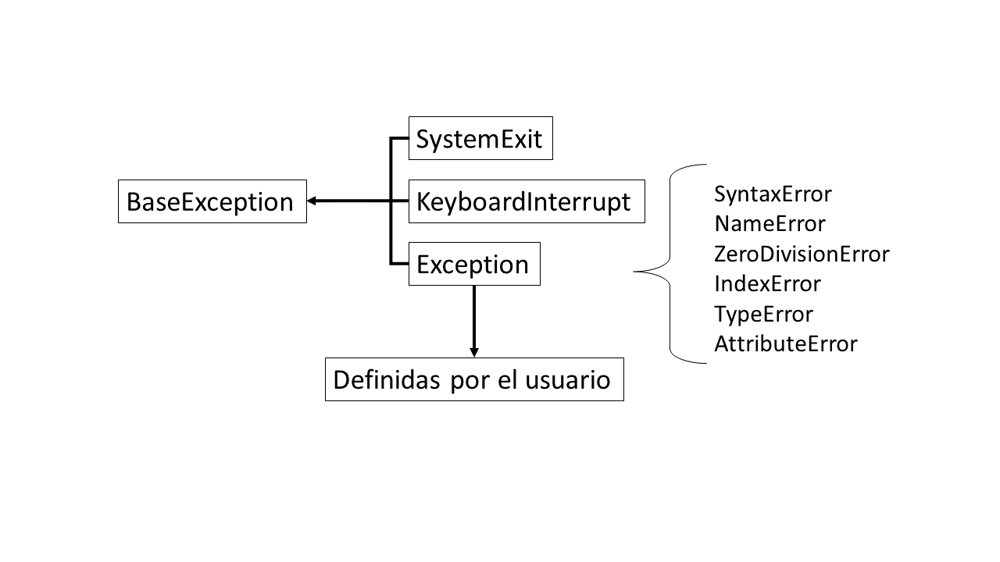

5. Excepciones, iterables e iteradores
Excepciones
Una excepción es una condición anómala que ocurre durante la ejecución de un programa y que interrumpe su ejecución esperada. Cuando ocurre esto, los sistemas generan un evento llamado excepción que cambia el curso habitual del programa.
Origen común de excepciones
- Operaciones, variables o métodos no definidos para ciertos tipos de datos.
- Acceso a regiones de memoria no permitidas
- Acceso a una key inexistente en un diccionario
- Manejo de excepciones (exception handling)
- Python permite generar (raise) excepciones cuando ocurre una situación anómala y capturarlas (catch) en bloques para redirigirlas, de tal modo que
- Corrige el problema,
- notifica al usuario,
- ignora y continua,
- o toma cualquier acción que permita retomar la ejecución normal del programa.
- Si una excepción no es manejada, se reporta al SO y, en general, el programa deja de ejecutarse y muestra el tipo de error.
- Python permite generar (raise) excepciones cuando ocurre una situación anómala y capturarlas (catch) en bloques para redirigirlas, de tal modo que
Excepciones en lenguajes interpretados vs compilados
- En lenguajes interpretados, las excepciones se producen en tiempo de ejecución (runtime exceptions).
- En lenguajes compilados, las excepciones se producen en tiempo de compilación o de ejecución, dependiendo del tipo de excepción.
Tipos de excepciones
SyntaxError
Ocurre por errores de sintaxis.
- Ausencia de una comilla, un paréntesis, los
:al final de una definición, etc.
- Se levanta antes de ejecutar el programa.
⚠️ la sintaxis puede variar entre diferentes versiones de Python
IndentationError
- Error que hereda de
SyntaxError
- En Python, cada vez que se define un bloque de código o scope (con
if,for,def, etc.) es obligatorio incluir al menos una instrucción correctamente indentada dentro de él.- Se puede “rellenar” con
pass
- Se puede “rellenar” con
NameError
- Ocurre al intentar acceder a un nombre que no ha sido definido previamente en el ámbito local o global.
ZeroDivisionError
- Ocurre cuando el denominador de una división es cero.
Ejemplo
def divide(x, y):
return x / y
divide(8, 0)IndexError
- Ocurre cuando se intenta acceder a un índice que está fuera del rango válido de una secuencia.
KeyError
- Alerta sobre el uso incorrecto o inválido de llaves en diccionarios y mappings.
AttributeError
- Alerta sobre el uso incorrecto de métodos o atributos de una clase o tipo de dato.
TypeError
Indica que hubo un manejo erróneo de tipos de datos.
- Cuando se intenta ejecutar una operación o función con un argumento que no pertenece al tipo correcto para la ejecución.
- El método
__call__define a los objetos como callable, por lo que tratar de ocuparlo cuando no ha sido implementado lanzaTypeError
ValueError
Indica que hubo un manejo erróneo de valor de datos.
- Cuando se trata de ejecutar una operación o función con un argumento cuyo valor no era apropiado para la ejecución esperada.
Ejemplos
"hola pepe".split("")
[1,2,3,4].remove(8)
- “Un
TypeErrores un caso particular deValueError”
Levantar y manejar excepciones
Para levantar excepciones se ocupa la sentencia raise seguido del tipo de excepción y un mensaje explicativo para el usuario.
def convert_coordinate(coordinate_string):
# Si el input no es del tipo esperado
if not isinstance(coordinate_string, str):
# aquí se genera una excepción y se incluye información para el usuario.
raise TypeError("Coordinate must be a string")
# Si el input no sigue el formato esperado
if "," not in coordinate_string:
# aquí se genera otra excepción y se incluye información para el usuario.
raise ValueError("Coordinate must be separated by a comma")
coord_x, coord_y = coordinate_string.split(",")
return (int(coord_x), int(coord_y))- Solamente se pueden atrapar excepciones que ocurren durante la ejecución de los programas.
Excepciones de tipo
SyntaxErroreIndentationErrorson detectadas en la lectura, antes de ejecutarse como tal, por lo que no se pueden atrapar.- No obstante, hay un truco con
importque permite “atraparlas”
- No obstante, hay un truco con
Manejo con bloque try / except
- La sentencia
trydefine un bloque de código.- Si se levanta una excepción dentro del scope de
try, entonces es capturada.
- Si se levanta una excepción dentro del scope de
- Las instrucciones
exceptpermiten manejar la excepción que fue capturada.- Pueden haber múltiples instrucciones
except
- Cada instrucción puede captar múltiples excepciones a través de tuplas.
Ejemplo
for arguments in [(45, "5"), (-23, 5), (4, 0), (21, 7)]: try: print(f"Calling divide{arguments}") print(divide(*arguments)) # En esta parte manejamos las excepciones una vez que son lanzadas. except (ZeroDivisionError, TypeError) as error: # Este bloque maneja excepciones del tipo ZeroDivisionError o TypeError. print(f"Error: {error}") print("Check the division data. There is an incorrect type.\n") except ValueError as error: # Este bloque sólo maneja excepciones del tipo ValueError. print(f"Error: {error}") print("A ValueError occurred. Please verify your values.\n") - Pueden haber múltiples instrucciones
- Una vez se captura una excepción dentro de un bloque
try, el flujo salta a la sentenciaexceptcorrespondiente. Luego, cuando este bloqueexcepttermina, el programa continua con la instrucción posterior al bloquetry/except
- Además de los bloques
try/exceptse pueden ocupar los siguientes bloques:else, se ejecuta siempre y cuando no ocurre una excepción
finally, se ejecuta siempre, independientemente de si ocurrió una excepción o no.- Útil para funciones de limpieza (ej. cerrar archivos).
- Un buen diseño de programa levanta excepciones dentro de las definiciones de las funciones y después se manejan en el programa donde se llaman estas.
Ventajas de usar excepciones
- Programador obligado a darle tratamiento: manejarlas o levantarlas.
- Código más limpio y fácil de leer.
- Si falla el programa, evitamos exponer a los usuarios a trozos de código (peligroso).
Iterables y generadores
- Iterable
- Objeto sobre el cual se puede iterar
- Podría aparecer al lado derecho del
inde unfor(for i in iterable)
Creación
Implementa el método
iter()- Se puede iterar todas las veces que uno quiera sobre un iterable (ej. listas).
- No es necesario que el objeto sea indexable (ej. sets).
Implementa el método
__getitem__()- Representa la posición de lo que se desea acceder.
- Cuando se levanta una posición inválida se debe levantar una excepción
IndexError- El
forse va a encargar de captar esta excepción y detener la iteración.
- El
- Iterador
- Objeto que itera sobre un iterable.
- Objeto retornado por el método
__iter__()
- Implementa el método
__next__()que retorna uno a uno los elementos de la estructura cada vez que se invoca a esta función.
- Cuando no quedan objetos por recorrer el iterador debe levantar una excepción
StopIteration
Ejemplo
# iter(conjunto) nos entrega un objeto que itera sobre ese conjunto conjunto = {1, 4, 6} iterador = iter(conjunto) # Esto es lo mismo que conjunto.__iter__() print(type(iterador)) # Ahora vamos a invocar a next para que el iterador nos entregue # el siguiente valor del iterable print(next(iterador)) # Esto es lo mismo que iterador.__next__() print(iterador.__next__())Ejemplo de iterador
Creación estructuras iterables
Se puede crear dos clases para representar una estructura iterable:
- Clase
Iterable- Método
__iter__- Retorna un objeto iterador de la clase
Iterador
- Permite que se cree un iterador cada vez que hagamos un
for
- Retorna un objeto iterador de la clase
- Método
- Clase
Iterador- Método
__iter__- Retorna una referencia a la instancia del iterador (
self)
También permite modificar el contenido del iterador de modo que los elementos se presenten de cierta manera cuando se ocupe un
forfrom typing import Self class IteradorListaNumerosOriginal: def __init__(self, iterable: list) -> None: self.iterable = iterable.copy() def __iter__(self) -> Self: self.iterable.sort() # ordena la lista a entregar return self def __next__(self) -> int: if not self.iterable: raise StopIteration("Llegamos al final") else: valor = self.iterable.pop(0) return valor iterable = IteradorListaNumerosOriginal(datos) for i in iter(iterable): print(i, end=" ")Otros ejemplos
def __iter__(self) -> Self: # Ordena los elementos de un set según su largo self.iterable = list(self.iterable) self.iterable.sort(key=ordenar_por_largo) return self def __iter__(self) -> Self: # Mezclamos los elementos del iterable antes de empezar a recorrerlos shuffle(self.iterable) return selfEs posible omitirlo, pero en ese caso no podríamos obtener un iterador de forma manual
iterador = iter(iterable)
- Retorna una referencia a la instancia del iterador (
- Método
__next__- Retornará los valores hasta que el iterador quede sin elementos.
- Cuando no quedan objetos por recorrer el iterador debe levantar una excepción
StopIteration
- Método
Generadores
- Permiten iterar sobre secuencias de datos sin la necesidad de almacenarlos en alguna estructura especial, evitando el uso innecesario de memoria.
- Útil para leer archivos muy grandes una línea a la vez o para realizar cálculos sobre números que sólo nos interesan para ese calculo en específico.
Su creación ocupa una sintaxis similar a las listas por comprensión, pero en lugar de corchetes cuadrados se ocupan paréntesis normales.
generador_pares = (2 * i for i in range(10))- Un generador solo se pueda iterar una vez
- Implementan el método
__iter__retornandoself
Uso de condiciones en generadores
- Un
ifal final permite generar solo aquellos elementos que cumplen la condición.
- Un
if-elsedentro del generador permite transformar valores → todos se generan, pero algunos pueden modificarse.
Ejemplo
{kind=link}
Listas ligadas
Nodo
- Unidad indivisible que contiene datos y que podemos identificar a través de un atributo llave (key).
Lista ligada
- Estructura que almacena nodos en un orden secuencial, en que cada nodo posee una referencia a un único nodo sucesor.
- El primer nodo se llama nodo cabeza y el último, sin sucesor, nodo cola.
Se puede representar con una clase Nodo que tenga de atributos su valor y una referencia al nodo siguiente (siguiente o next )
- El atributo
siguientedel nodo cola va a serNone, al igual que con los nodos nuevos que se pongan al final de la lista ligada.
from typing import Any
class Nodo:
"""
Esta clase representa un nodo de una lista ligada
"""
def __init__(self, valor: Any = None) -> None:
"""
Inicializa la estructura del nodo
"""
self.valor = valor
self.siguiente = None # Al crear un nodo,
# la referencia al siguiente nodo comienza vacía
def __repr__(self) -> str:
return f"Nodo[{self.valor}]"Creación de listas ligadas
Ejemplo de plantilla para estructuras secuenciales en base a nodos
from abc import ABC, abstractmethod
from typing import Any
class EstructuraSecuencialNodal(ABC):
"""
Clase abstracta que representa una estructura secuencial
en base a Nodos
"""
# Todas nuestras estructuras secuenciales poseen:
# una cabeza y una cola que inicialmente estan vacías
# un largo
# un nodo inicial al cual referenciar
@abstractmethod
def __init__(self) -> None:
self.cabeza = None
self.largo = 0
@abstractmethod
def agregar(valor: Any) -> None:
pass
@abstractmethod
def obtener(posicion: int) -> Any:
pass
@abstractmethod
def insertar(valor: Any, posicion: int) -> None:
pass
def __len__(self) -> int:
contador = 0
nodo_actual = self.cabeza
while nodo_actual is not None:
nodo_actual = nodo_actual.siguiente
contador += 1
self.largo = contador
return self.largoEjemplo de plantilla para una lista ligada
# Creamos la base de nuestra Lista Ligada
class ListaLigada(EstructuraSecuencialNodal):
"""
Clase que representa una lista ligada
"""
def __init__(self) -> None:
"""
Inicializa una lista ligada vacía,
con una referencia nula a su cabeza y cola
"""
super().__init__()
# Como nuestra LL parte vacía, hacemos que la referencia
# a su cola sea igual que a su cabeza
self.cola = self.cabeza
def agregar(valor: Any) -> None:
return super().agregar(valor)
def obtener(posicion: int) -> Any:
return super().obtener(posicion)
def insertar(valor: Any, posicion: int) -> None:
return super().insertar(valor, posicion)- Requiere implementar 3 métodos
agregar(valor)—> agrega un nuevo nodo al final de la lista ligada con el valorvalordef agregar(self, valor: Any) -> None: """ Agrega un nodo al final de la cola, similar a lista.append """ # Inicializamos el nuevo nodo nuevo = Nodo(valor) # Si la lista está vacía (no hay cabeza) if self.cabeza is None: # El nuevo nodo es la cabeza y cola de la lista self.cabeza = nuevo self.cola = self.cabeza else: # Agregamos el nuevo nodo como sucesor del nodo cola actual self.cola.siguiente = nuevo # Actualizamos la referencia al nodo cola self.cola = self.cola.siguiente self.largo += 1obtener(posicion)—> recupera el valor del nodo de la posiciónposicióndef obtener(self, posicion: int) -> Any: """ Busca el valor del nodo que está en la posición indicada, partiendo de 0 """ # Revisamos que la posición sea válida if posicion < 0: print(f'---No es posible obtener el valor en dicha posición---') return None # Empezamos en la cabeza (nodo inicial en esta estructura) nodo_actual = self.cabeza # Recorremos secuencialmente la lista ligada siguiendo los punteros # al nodo siguiente for _ in range(posicion): # Revisamos que no se haya llegado al final de la lista if nodo_actual is not None: nodo_actual = nodo_actual.siguiente # Si buscamos una posición mayor a la longitud de la lista ligada if nodo_actual is None: return None # Retorna "nada" return nodo_actual.valorinsertar(valor, posicion)—> agrega un nuevo nodo con valorvaloren la posiciónposicionde la lista ligada.def insertar(self, valor: Any, posicion: int) -> None: """ Inserta un valor nuevo en una posición arbitraria """ # Revisamos que la posición sea válida if posicion < 0: print(f'---No es posible insertar el valor en dicha posición---') return None # Inicializamos el nuevo nodo nodo_nuevo = Nodo(valor) # Empezamos en la cabeza (nodo inicial en esta estructura) nodo_actual = self.cabeza # Caso particular: insertar en la cabeza if posicion == 0: # Actualizamos la cabeza nodo_nuevo.siguiente = self.cabeza self.cabeza = nodo_nuevo # Caso más particular. Si la lista estaba vacía, # actualizamos la cola if nodo_nuevo.siguiente is None: self.cola = nodo_nuevo # Terminamos de ejecutar la función self.largo += 1 return # Buscamos el nodo predecesor for _ in range(posicion - 1): if nodo_actual is not None: nodo_actual = nodo_actual.siguiente # Si encontramos el predecesor, actualizamos las referencias if nodo_actual is not None: # Si no lo hacemos en este orden perdemos la referencia # al resto de la lista ligada nodo_nuevo.siguiente = nodo_actual.siguiente nodo_actual.siguiente = nodo_nuevo # Caso particular: si es que insertamos en la última posición if nodo_nuevo.siguiente is None: self.cola = nodo_nuevo self.largo += 1 else: print(f'---No es posible insertar el valor en dicha posición---') return None
Excepciones personalizadas
{kind=link}

BaseException. A partir de estas existen 3 tipos de excepciones (SystemExit , KeyboardInterrupt y Exception ). Todas las excepciones generadas por errores durante la ejecución de un programa son subclases de Exception .- Capturar
Exceptionlogra capturar todas las excepciones, pero se considera una mala práctica por lo poco específico.
Para excepciones personalizadas basta con crear clases personalizadas que hereden de Exception
class Exception1(Exception):
# Al no sobrescribir nada, hereda todo sin modificaciones.
pass
class Exception2(Exception):
def __init__(self, a, b):
# Sobrescribimos el __init__ para cambiar el ingreso de los parámetros.
super().__init__(f"One of the values {a} or {b} is not an integer")
def divide(num, den):
# Por ejemplo, redefiniremos las excepciones que
# utilizamos en los ejemplos anteriores.
if not (isinstance(num, int) and isinstance(den, int)):
raise Exception2(num, den)
if num < 0 or den < 0:
raise Exception1("The values are negative")
return float(num) / float(den)- Una excepción personalizada puede incluir métodos que indiquen mayor información sobre la excepción.